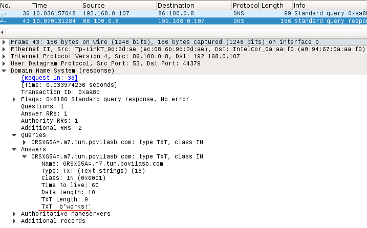

Data tunelling over DNS
Some public Wi-Fi spots have internet access restricted until you authenticate yourself. This quite often happens in airports and hotels. One interesting thing about such network setups is that DNS is working. This fact can be exploited to tunnel arbitrary data through DNS requests/responses.
In a nutshell the process looks like this:
+-----------+
| DNS query |
+--------+ 1 | |
| Client | ------> | +------+ |
+--------+ | | Data | |
^ | +------+ |
| +-----------+
| |
| 6 | 2
| v
| +--------------+
+------------ | DNS Resolver | --------------+
| @ISP | 3 |
+--------------+ |
^ |
5 | |
| V
+--------------+ +------------+
| DNS response | | DNS server |
| | +------------+
| +------+ | |
| | Data | | <-------------+
| +------+ | 4
+--------------+
Client encodes his data into DNS query.
DNS query is sent to DNS resolver which usually is at ISP.
DNS resolver sends request to DNS server [1]. This DNS server is our software which is capable of decoding data from DNS query.
Our DNS server encodes some arbitrary data to DNS response.
Response is sent back to DNS resolver.
Resolver relays the response to client which then can decode the data inside DNS response.
Setup
The existing DNS ecosystem will tunnel our data. But we need to control DNS server which decodes our requests and sends responses back. Thus we need 4 things:
control over a real domain,
NS record pointing to our server,
a server with UDP port 53 open,
software handling DNS requests.
I own povilasb.com domain thus I can delegate a subdomain for my DNS server:
ns.povilasb.com A 86.100.203.141 $ host ns.povilasb.com ns.povilasb.com has address 86.100.203.141
Then to route all queries for tun.povilasb.com subdomains to ns.povilasb.com server NS record is required:
tun.povilasb.com NS ns.povilasb.com
Finally, a simple Python script is sufficient to receive DNS requests:
import socket sock = socket.socket(socket.AF_INET, socket.SOCK_DGRAM) sock.bind(('0.0.0.0', 53)) while True: request, addr = sock.recvfrom(512) print(addr, request)
The script must be run the script with root permissions:
$ sudo python3 main.py
Now we can test if server works by sending DNS requests from any computer:
$ host abc.tun.povilasb.com
Python script should write received buffer to stdout:
sudo python3 main.py
('212.59.18.8', 64329) b'Y\xbd\x00\x00\x00\x01\x00\x00\x00\x00\x00\x01\x03abc\x03tun\x08povilasb\x03com\x00\x00\x01\x00\x01\x00\x00)\x10\x00\x00\x00\x80\x00\x00\x00'
If you can see such output, it means that you set up DNS records correctly. Now we can replace this small Python script with one that is capable of encoding/decoding data to DNS requests and responses.
Data encoding
We can implement bidirectional communication on top of DNS:
+--------+ request +------------+
| Client | ------------> | DNS Server |
+--------+ +------------+
^ |
| response |
+--------------------------+
Request and response are encoded in different ways and must be handled separately.
Some sample Python code can be found at https://github.com/povilasb/iptun/blob/5da201661474b5a3e0fb898f2c445929cb2a5233/iptun/dns.py. And if you want to see a full working DNS tunneling server, check https://github.com/yarrick/iodine. Although, it's a C based project which is more difficult to read.
Upstream
As funny as it sounds we can encode data to domain name. E.g. DNS query with record thisismydata.tun.example.com carries "thisismydata" string which can be anything. We can even encode binary data this way using Base64 encoding:
dGhpc2lzbXlkYXRhIC1uCg==.tun.example.com
Unfortunately, DNS names have some limitations which we have to respect if we want our queries to be delivered [2]:
max 255 bytes
_____________
| |
v V
label.name.com.
^ ^
|__|
max 63 bytes
maximum total DNS name length is 255 bytes,
every substring separated by dot must not exceed 63 bytes.
So if you have data encoded to Base64 which exceeds 63 bytes, it must be split into multiple parts:
dmVyeSBsb25nIHRleHQgZXhjZWVkaW5nIDYzIGJ5dGVzLCBleGNlZWRpbmcgNjMgYnl0ZXMK is encoded to dmVyeSBsb25nIHRleHQgZXhjZWVkaW5nIDYzIGJ5dGVzLCBleGNlZWRpbmcgNjM.gYnl0ZXMK.tun.example.com.
Note that if you query for the same domain name twice, the query will not be delivered to our DNS server, instead cache will be used. Thus I add some random nonce to every domain name:
data.a2.example.com data.m4.example.com
Downstream
When encoding data to DNS response multiple record types can be used: NULL, PRIVATE, TXT, SRV, MX, CNAME and A records. [3] The record type is selected in DNS query.
I know for a fact that TXT and NULL records allow arbitrary data to be attached. Thus you encode your data inside TXT record and send it back to the client. Then in Wireshark the DNS response looks like this:

Comments